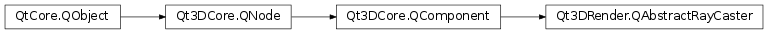

Qt3DRender.QAbstractRayCaster¶
Inherited by: Qt3DRender.QScreenRayCaster, Qt3DRender.QRayCaster
Note
This class was introduced in Qt 5.11.
Synopsis¶
Functions¶
- def
addLayer(layer) - def
filterMode() - def
layers() - def
removeLayer(layer) - def
runMode()
Slots¶
- def
setFilterMode(filterMode) - def
setRunMode(runMode)
Signals¶
- def
filterModeChanged(filterMode) - def
runModeChanged(runMode)
Detailed Description¶
An abstract base class for ray casting in 3d scenes
Qt3DRender.QAbstractRayCasteris an abstract base class for casting rays into a 3d scene.Qt3DRender.QAbstractRayCastercan not be directly instantiated, but rather through its subclasses.QAbstractRayCasterspecifies common properties for all ray casters, such as run mode and layer handling, while leaving the actual ray casting details to the subclasses.Ray castings differs from picking (using
Qt3DRender.QObjectPicker) in that it does not require mouse events to trigger.By default, the instances of
Qt3DRender.QAbstractRayCasterare disabled. When enabled, the specified ray will be tested for intersecting objects at every frame. TheQAbstractRayCaster.hitsproperty will be updated with the results of the ray casting, even if no objects are found.The
Qt3DRender.QPickingSettingscan be used to control the ray casting, such as which primitives are tested and how the results are returned.Furthermore,
Qt3DRender.QLayercomponents can be used to control how entities, or entity sub-graphs, react to ray casting.Note
Components derived from
QAbstractRayCastershould not be shared amount multiple entities.See also
Qt3DRender.QRayCasterQt3DRender.QScreenRayCasterQt3DRender.QObjectPickerQt3DRender.QPickingSettings
-
class
PySide2.Qt3DRender.Qt3DRender.QAbstractRayCaster([parent=nullptr])¶ Parameters: parent – PySide2.Qt3DCore.Qt3DCore::QNode
-
PySide2.Qt3DRender.Qt3DRender.QAbstractRayCaster.RunMode¶ This enumeration specifies how often ray casting is performed
Constant Description Qt3DRender.QAbstractRayCaster.Continuous Ray casting is performed at every frame as long as the component is enabled. Qt3DRender.QAbstractRayCaster.SingleShot Ray casting is done once then the component disables itself. This is the default
-
PySide2.Qt3DRender.Qt3DRender.QAbstractRayCaster.FilterMode¶ Specifies the rules for selecting entities to test for raycasting.
Constant Description Qt3DRender.QAbstractRayCaster.AcceptAnyMatchingLayers Accept entities that reference one or more QLayerobjects added to thisQAbstractRayCaster. This is the defaultQt3DRender.QAbstractRayCaster.AcceptAllMatchingLayers Accept entities that reference all the QLayerobjects added to thisQAbstractRayCasterQt3DRender.QAbstractRayCaster.DiscardAnyMatchingLayers Discard entities that reference one or more QLayerobjects added to thisQAbstractRayCasterQt3DRender.QAbstractRayCaster.DiscardAllMatchingLayers Discard entities that reference all QLayerobjects added to thisQAbstractRayCaster
-
PySide2.Qt3DRender.Qt3DRender.QAbstractRayCaster.addLayer(layer)¶ Parameters: layer – PySide2.Qt3DRender.Qt3DRender::QLayerAdd
layerto the current list of layers
-
PySide2.Qt3DRender.Qt3DRender.QAbstractRayCaster.filterMode()¶ Return type: PySide2.Qt3DRender.Qt3DRender::QAbstractRayCaster.FilterModeSee also
PySide2.Qt3DRender.Qt3DRender::QAbstractRayCaster.setFilterMode()
-
PySide2.Qt3DRender.Qt3DRender.QAbstractRayCaster.filterModeChanged(filterMode)¶ Parameters: filterMode – PySide2.Qt3DRender.Qt3DRender::QAbstractRayCaster.FilterMode
-
PySide2.Qt3DRender.Qt3DRender.QAbstractRayCaster.layers()¶ Return type: Returns the current list of layers
-
PySide2.Qt3DRender.Qt3DRender.QAbstractRayCaster.removeLayer(layer)¶ Parameters: layer – PySide2.Qt3DRender.Qt3DRender::QLayerRemove
layerfrom the current list of layers
-
PySide2.Qt3DRender.Qt3DRender.QAbstractRayCaster.runMode()¶ Return type: PySide2.Qt3DRender.Qt3DRender::QAbstractRayCaster.RunModeSee also
PySide2.Qt3DRender.Qt3DRender::QAbstractRayCaster.setRunMode()
-
PySide2.Qt3DRender.Qt3DRender.QAbstractRayCaster.runModeChanged(runMode)¶ Parameters: runMode – PySide2.Qt3DRender.Qt3DRender::QAbstractRayCaster.RunMode
-
PySide2.Qt3DRender.Qt3DRender.QAbstractRayCaster.setFilterMode(filterMode)¶ Parameters: filterMode – PySide2.Qt3DRender.Qt3DRender::QAbstractRayCaster.FilterModeSee also
PySide2.Qt3DRender.Qt3DRender::QAbstractRayCaster.filterMode()
-
PySide2.Qt3DRender.Qt3DRender.QAbstractRayCaster.setRunMode(runMode)¶ Parameters: runMode – PySide2.Qt3DRender.Qt3DRender::QAbstractRayCaster.RunModeSee also
PySide2.Qt3DRender.Qt3DRender::QAbstractRayCaster.runMode()
© 2018 The Qt Company Ltd. Documentation contributions included herein are the copyrights of their respective owners. The documentation provided herein is licensed under the terms of the GNU Free Documentation License version 1.3 as published by the Free Software Foundation. Qt and respective logos are trademarks of The Qt Company Ltd. in Finland and/or other countries worldwide. All other trademarks are property of their respective owners.